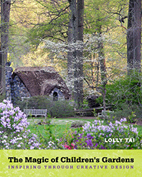

<body bgcolor="#FFFFFF" text="#000000" link="#0000FF" vlink="#CC0000" alink="#CC0000"><center><hr width="350" size="1" align="center" noshade>Explores the purpose, beauty, and benefits of creating children's outdoor environments in public gardens<hr width="350" size="1" align="center" noshade><p><a href="https://cdcshoppingcart.uchicago.edu/Cart/ChicagoBook.aspx?ISBN=&&PRESS=temple" target="_top">Buy this book!</a> | <a href="https://cdcshoppingcart.uchicago.edu/Cart/Cart.aspx?PRESS=temple" target="_top">View Cart</a> | <a href="https://cdcshoppingcart.uchicago.edu/Cart/Cart.aspx?PRESS=temple" target="_top">Check Out</a></p><p></p></center><!--none//--><h1 class = "booktitle">The Magic of Children's Gardens</h1> <h1 class = "subtitle">Inspiring Through Creative Design</h1>
<h3>Lolly Tai</h3>
<p class="info">cloth: $75.00, Apr 17<BR>EAN:&nbsp;978-1-4399-1447-2<BR><font color=#990033>Not Yet Published Preorder</FONT><font size=-7><br>&nbsp;</font></p><p class="info"></p></td></tr></table>
<BR> <p class="info">376 pp<BR> 8 x 10<BR> 679 color photos, 22 tables <p class="info"><font size=-7>&nbsp;</font></p><p class="info">
</P><BLOCKQUOTE></BLOCKQUOTE>
<p>
Children's gardens are magical places where kids can interact with plants, see where food and fibers grow, and experience the role of birds, butterflies, and bees in nature. These gardens do more than just expose youngsters to outdoor environments, they also provide marvelous teaching opportunities for them to visit a small plot, care for vegetables and flowers, and interact in creative spaces designed to stimulate all five senses.&nbsp;<br>
<p>In&nbsp;<i>The Magic of Children's Gardens,&nbsp;</i>landscape architect&nbsp;Lolly Tai provides the primary goals, concepts and key considerations for designing outdoor spaces that are attractive to and suitable for children especially in urban environments. Tai presents inspiring ideas for creating children's green spaces by examining nearly twenty<b> </b>case studies, including the Chicago Botanic Gardens and Longwood Gardens in Kennett Square, PA.
<br />&nbsp;
<br /><i>The Magic of Children's Gardens&nbsp;</i>features hundreds of comprehensive drawings and gorgeous photographs of successful children's outdoor environments, detailed explanations of the design process, and the criteria needed to create attractive and pleasing gardens for children to augment their physical, mental, and emotional development.<br>
<p>Exposing youth to well-planned outdoor environments promotes our next generation of environmental stewards. <i>The Magic of Children's Gardens&nbsp;</i>offers practitioners a guide to designing these valued spaces.
<br>
<P CLASS="top"><A HREF="#top">BACK TO TOP</A></P>&nbsp;
<BR>&nbsp;
&nbsp;<P>
</P><BR>&nbsp;
<H2 class="inpageheading"><A NAME="author bio"></a>About the Author(s)</H2><p>
<b>Lolly Tai </b>is Professor of Landscape Architecture at Temple University, and co-author of the award-winning book, <i>Designing Outdoor Environments for Children.</i>
<br>
<P CLASS="top"><A HREF="#top">BACK TO TOP</A></P>
<p><h2 class="inpageheading"><A NAME="subjects"></a>Subject Categories</h2><P><A HREF="/tempress/art.html" TARGET="_top">Art and Photography</a><BR><P><A HREF="/tempress/education.html" TARGET="_top">Education</a><BR><P><A HREF="/tempress/nature.html" TARGET="_top">Nature and the Environment</a></P></P>
</p>
<P>
</P>
<p align="center"><a href="https://cdcshoppingcart.uchicago.edu/Cart/ChicagoBook.aspx?ISBN=&&PRESS=temple" target="_top">Buy this book!</a> | <a href="https://cdcshoppingcart.uchicago.edu/Cart/Cart.aspx?PRESS=temple" target="_top">View Cart</a> | <a href="https://cdcshoppingcart.uchicago.edu/Cart/Cart.aspx?PRESS=temple" target="_top">Check Out</a></p><p><font face="Arial" size="1"><a href="copyright.html" onMouseOver="window.status='Web Copyright Policy';return true;" onMouseOut="window.status=''" title="Web Copyright Policy">&copy;</a> 2017 <a href="http://www.temple.edu" target="new" onMouseOver="window.status='Link to Temple University home page';return true;" onMouseOut="window.status=''" title="Link to Temple University home page">Temple University</a>. All Rights Reserved. http://www.temple.edu/tempress/titles/2437_reg.html</font></p>